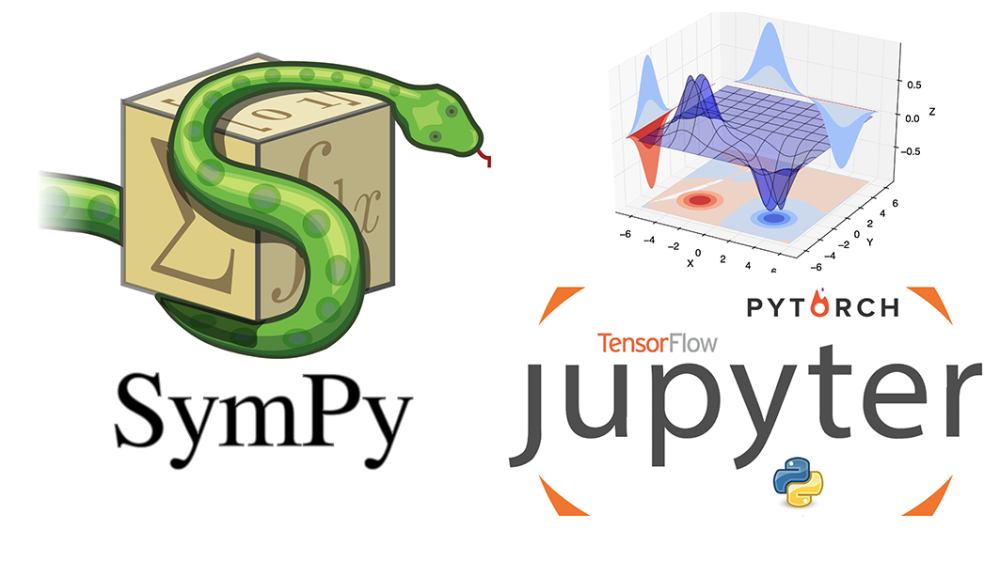
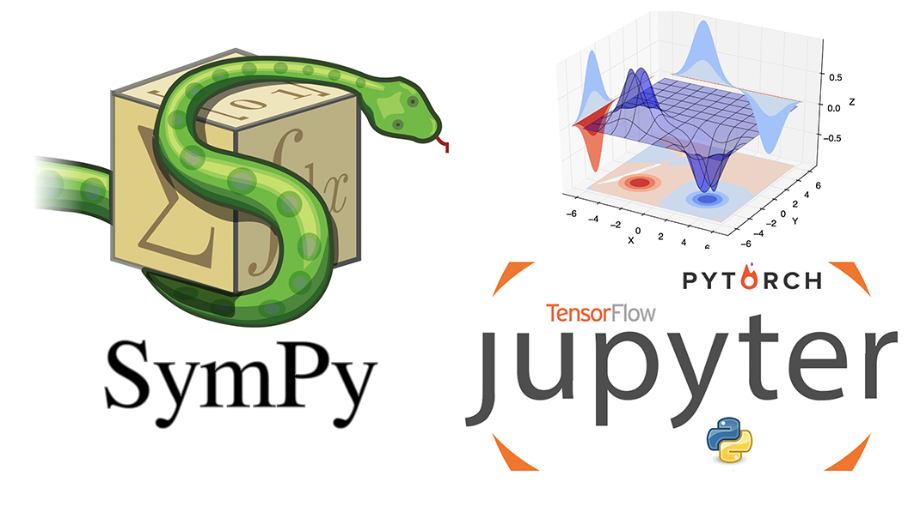

Introducción al Análisis y Visualización de Datos en Python
 

Hola Mundo
¡Hola! En este curso aprenderás a utilizar algunas herramientas que podrían ayudarte a lo largo de tu desempeño académico y/o personal. A través del uso de uno de los lenguajes de programación más populares y versátiles de nuestra época "Python" (Referencia original).
Este curso te será de utilidad si es la primera vez que tienes acercamiento con un lenguaje de programación, ya que se abordaran los conceptos básicos de programación. Si consideras que tienes experiencia en programación con otros lenguajes, entonces este curso podría ser de utilidad para explorar el uso de herramientas y librerías que extienden la funcionalidad de Python de forma gratuita (Código abierto)
No importa el nivel de experiencia previa que poseas en programación, este curso te ayudará a aprender herramientas útiles para una cada vez más grande variedad de aplicaciones que van desde simulaciones básicas, pasando por aplicaciones en ciencia de datos (data science) hasta los famosos modelos de inteligencia artificial más utilizados actualmente tanto en la comunidad científica como en la industria.
Requisitos
Para realizar las actividades y ejercicios del curso te recomandamos contar con lo siguiente:
- Python versión 3.x instalado
- Un Entorno de Desarrollo Integrado (IDE) de tu agrado para trabajar con Python
- Las siguientes librerías instaladas:
- Numpy
- Pandas
- Matplotlib
- Scipy
- PyTorch (opcional)
Ayuda inicial
Proceso de instalación
Verificar arquitectura de tu dispositivo
Para llevar a cabo las prácticas de Inteligencia Artifical en tu computadora es necesario que cuentes con un equipo que soporte una arquitectura de 64-bits, de lo contrario no podrás instalar los paquetes necesarios. Si no sabes qué arquitectura tiene tu dipositivo puedes seguir el siguiente procedimiento dependiendo de tu sistema operativo:
Abre una terminal o línea de comandos (busca Símbolo del sistema en tus aplicaciones).
Escribe el comando systeminfo, cuando se despliegue la información de tu computadora busca el apartado
que dice Tipo de sistema a un costado te aparecerá si tu computadora tiene una arquitectura de 64-bits (x64) o de 32-bits.
En el menú Apple (esquina superior izquierda) selecciona Acerca de esta Mac. Posteriormente en el cuadro que te aparece con información de tu sistema, selecciona Reporte del sistema. En la ventana que aparece busca en el menú el apartado de Software y luego en Aplicaciones. Te aparecerá un apartado en el lado derecho con la información de tu dispositivo, ahí se especifica si es de 64-bits o de 32-bits.
Abre una terminal y escribe el comando lscpu. En la información desplegada busca el apartado Architecture donde indica
si tu computadora es de 64-bits (x64) o de 32-bits.
En caso de no contar con una computadora de 64-bits, por favor ponte en contacto con nosotros a través de la sección Acerca de este curso para que te platiquemos sobre otra estrategia para realizar las prácticas de Inteligencia Artificial sin mayores complicaciones.
Instalación de Python
Si tienes Mac OS o Linux, en muchas distribuciones de estos sistemas operativos ya viene instalado de forma predeterminada python.
Te recomendamos verificarlo ejecutando el comando python --version en una terminal, que te informará la versión instalada. En caso de que esta versión corresponda
con la 2 de python (e.g. 2.7.3) puedes intentar ahora con el comando python3 --version ya que en ocasiones vienen instaladas ambas versiones y este último
comando hace referencia a la versión 3.x disponible en tu dispositivo.
Para instalar python visita https://www.python.org/downloads/ que es la página oficial de descargas del lenguaje. Automáticamente detectará tu sistema operativo y te mostrará un botón de descarga, si deseas descargar la versión de 32-bits puedes dar click en ese botón y proceder con la descarga. De forma contraria, para la descarga de la versión de 64-bits deberás seleccionar tu sistema operativo en las opciones que aparecen debajo del botón de descarga. Se te mostrarán todas las versiones disponibles de Python para el sistema operativo que hayas seleccionado, busca la versión más reciente en el grupo marcado como Stable Releases posteriormente busca el link de descarga que tenga la leyenda x86-64 que hace refencia a la versión de 64-bits. Sigue los siguientes pasos según tu sistema operativo:
Te recomendamos descargar el archivo marcado como executable installer ya que desplegará una
interfaz de usuario que hace más amigable el proceso de instalación.
Una vez finalizada la descarga abre el ejecutable. Aparecerá la venta de descarga, en esa misma ventana
en la parte inferior slecciona la casilla de verificación con la leyenda Add Python to PATH, ya que esto
te permitirá correr python desde la terminal usando el comando python. En las opciones
de instalación, te recomendamos seleccionar Customize installation. en la siguiente ventana dar
click en siguiente y en el apartado Advanced Options seleccionar la casilla Install for all users nota que
al hacerlo, la ubicación de la instalación cambiará, de forma que ahora todos los usuario del dispositivo tengan acceso a python.
A menos que no desees que otros usuarios tengan acceo a la instalación de python, es recomendable instalarlo de esta forma.
Finalmente al dar click en install deberá comenzar el proceso de instalación en la ubicación seleccionada.
Una vez que termine la instalación puedes corroborar que funcione adecuadamente abriendo una línea de comandos
y escribir python y dar enter. Al hacerlo debería de mostrarte información referente a la versión
de python que acabas de instalar y modificarse el símbolo que aparece a la izquierda de donde está el cursor. Prueba escribiendo
print("Hola Python") y da enter. Debería de mostrarse algo como lo siguiente:
>>> print("Hola Python")
Hola Python
>>>
Si es así, ¡felicidades, ya tienes python corriendo correctamente en tu computadora! Para salir de python puedes cerrar la terminal o
escribir exit().
Una vez finalizada la descarga abre el ejecutable. Aparecerá una interfaz de usuario que te ayudará a instalar Python. Sigue con el proceso
de instalación mostrado. Una vez finalizado, puedes verificar que se haya instalado python correctamente desde la terminal con el comando
python si no tenías Python 2.x ya instalado, de lo contrario ocuparás el comando python3.
Al hacerlo debería de mostrarte información referente a la versión
de python que acabas de instalar y modificarse el símbolo que aparece a la izquierda de donde está el cursor. Prueba escribiendo
print("Hola Python") y da enter. Debería de mostrarse algo como lo siguiente:
>>> print("Hola Python")
Hola Python
>>>
Si es así, ¡felicidades, ya tienes python corriendo correctamente en tu computadora! Para salir de python puedes cerrar la terminal o
escribir exit().
Si utilizas Ubuntu 16.10 o posteriores, puedes correr en línea de comandos lo siguiente:
$ sudo apt-get update
$ sudo apt-get install python3
De lo contrario, si utilizas Ubuntu 10.04 o 16.04 debes de correr los siguientes comandos:
$ sudo add-apt-repository ppa:fkrull/deadsnakes
$ sudo apt-get update
$ sudo apt-get install python3
Si tienes alguna otra distribución de Linux, tienes que utilizar el paquete instalador propio de esta.
Una vez finalizado, puedes verificar que se haya instalado python correctamente desde la terminal con el comando
python si no tenías Python 2.x ya instalado, de lo contrario ocuparás el comando python3.
Al hacerlo debería de mostrarse algo como lo siguiente:
>>> print("Hola Python")
Hola Python
>>>
Si es así, ¡felicidades, ya tienes python instalado correctamente en tu computadora! Para salir de python puedes cerrar la terminal o
escribir exit().
Instalación de Paquetes a través de PIP
La instalación de Python cuenta con un servicio instalador de paquetes PIP, un comando que te permitirá descargar los paquetes necesarios para este curso, así como muchos otros disponibles para python a través de la línea de comandos.
Para comenzar puedes abrir una terminal y correr el siguiente comando pip3 install --upgrade pip el cual actualizará
pip a la versión más reciente. Una vez que tengas descargada la versión más reciente, podrás continuar con las demás instalaciones de manera
adecuada.
Es muy importante que utilices el comando pip3 en lugar de pip ya que vamos a trabajar con
la versión 3 de Python. Siempre que vayas a descargar un paquete para Python 3 recuerda utilizar pip3 ya que de lo contrario podría
haber problemas de compatibilidad u otras dificultades indeseadas.
Instalación de Jupyter Notebook
Para instalar jupyter notebook es necesario correr los siguientes comandos en una terminal:
pip3 install jupyter
pip3 install notebook
Una vez que finalicen las instalaciones podrás verificar que se haya instalado de forma correcta el Notebook ejecutando el comando jupyter notebook en una terminal.
Al hacerlo se debe de desplegar la ventana inicial de Jupyter en tu navegador predeterminado.
Puedes encontrar más información sobre jupyter y jupyter notebook en la página https://jupyter.org/install así como su respectiva documentación. También puedes revisar la alternativa a Jupyter Notebook llamada Jupyter Lab que es otro IDE muy similar pero que ofrece otras ventajas sobre el Notebook convencional; esa decisión la dejamos a tu consideración.
Instalación de paquetes
Para instalar paquetes a través de pip simplemente es necesario buscar el comando para cada librería. Los que se van a necesitar son los siguientes:
- Numpy:
pip3 install numpy - Pandas:
pip3 install pandas - Matplotlib:
pip3 install matplotlib - Scipy:
pip3 install scipy
Instalación de PyTorch
Recuerda que para poder instalar este paquete es necesario que tu computadora tenga una arquitectura de 64-bits y que hayas instalado la versión de 64-bits de Python, de lo contrario no podrás llevar a cabo la instalación. Si ese es tu caso, sería muy importante que pudieras contactarnos y comentarnos tu situación. Además de eso, puedes visitar la secciónn de recursos adicionales donde encontrarás una excelente alternativa y no perderte la última sección del curso.
Para buscar el comando de instalación de PyTorch es necesario entrar al sitio https://pytorch.org/. Una vez en el sitio buscar la sección Quick Start Locally donde se despliegan varias opciones. Deberás elegir las que correspondan con tu sistema, recordando que vas a utilizar Pip como paquete instalador. Si tu computadora tiene una tarjeta gráfica (GPU) de la marca NVIDIA podrás seleccionar la versión de CUDA que tengas instalada. Si no cuentas con GPU NVIDIA selecciona la opción None. En la parte inferior marcada como Run this command aparece el comando que tienes que copiar y pegar en la terminal para instalar PyTorch.
pip por
pip3.
Una vez finalizada la instalación puedes probar que se haya llevado a cabo correctamente ejecutando lo siguiente en python:
>>> import torch
>>> x = torch.rand(5, 3)
>>> print(x)
El resultado debería de ser algo similar a lo siguiente:
tensor([[0.3380, 0.3845, 0.3217],
[0.8337, 0.9050, 0.2650],
[0.2979, 0.7141, 0.9069],
[0.1449, 0.1132, 0.1375],
[0.4675, 0.3947, 0.1426]])
Si se realizó la instalación para CUDA, puedes verificar la instalación ejecutando:
>>> import torch
>>> torch.cuda.is_available()
Que regresará un valor True si la instalación fue correcta, o False en caso contrario.
Últimos detalles
Si completaste todos los pasos anteriores, ¡tienes listo todo lo que se necesitará en el curso! Te recomendamos visitar la sección de recursos adicionales donde encontrarás un poco más de información que pudiera ser de utilidad.